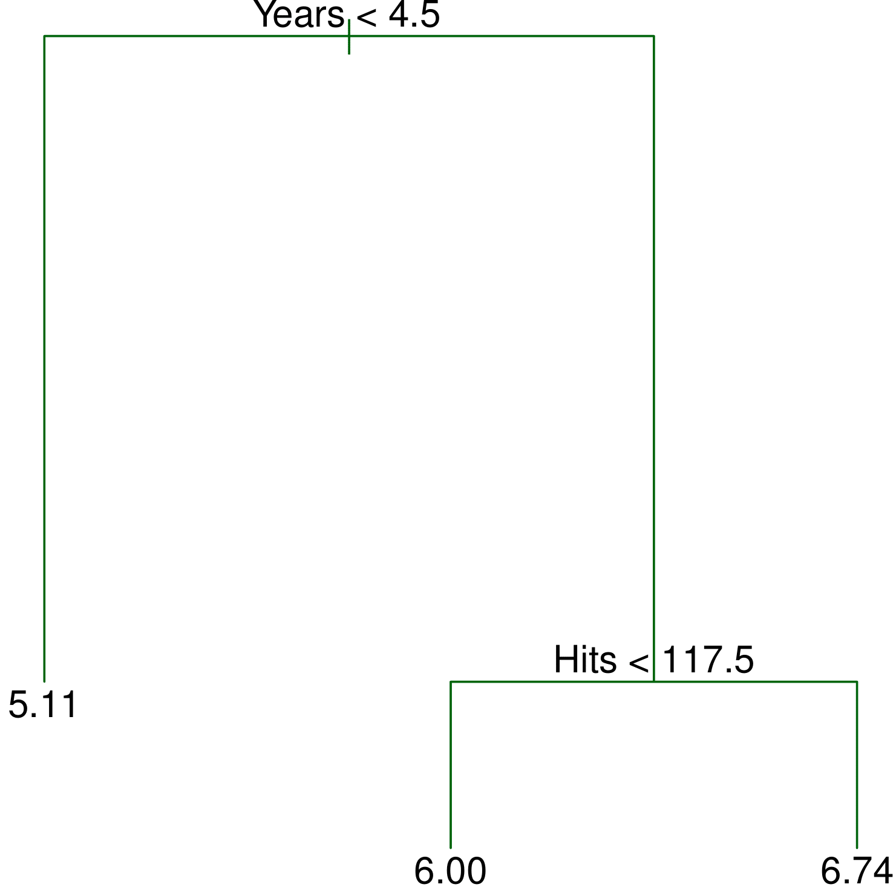

Tree-based Methods
MSSC 6250 Statistical Machine Learning
Decision Trees: Classification and Regression Trees (CART)
CART is a nonparametric method that recursively partitions the feature space into hyper-rectangular subsets (boxes), and make prediction on each subset.
Divide the predictor space — the set of possible values for \(X_1, X_2, \dots, X_p\) — into \(J\) distinct and non-overlapping regions, \(R_1, R_2, \dots, R_J\).

- For every test point that falls into the region \(R_j\) , we make the same prediction:
- Regression: the mean of the response values for the training points in \(R_j\), i.e., \(\hat{y}_{R_j} = \sum_{k \in R_j} y_k / |R_j|\)
- Classification: the most commonly occurring class of training points in \(R_j\), i.e., \(\hat{y}_{R_j} = \underset{c}{\text{arg max}} \, \,\# (y_k = c)\), \(y_k \in R_j\).
Classification Tree
KNN requires K and a distance measure.
SVM requires kernels.
Tree solves this by recursively partitioning the feature space using a binary splitting rule \(\mathbf{1}\{x \le c \}\)
0: Red; 1: Blue

Classification Tree
If \(x_2 < -0.64\), \(y = 0\).


Classification Tree
If \(x_2 \ge -0.64\) and \(x_1 \ge 0.69\), \(y = 0\).

Classification Tree
If \(x_2 \ge -0.64\), \(x_1 < 0.69\), and \(x_2 \ge 0.75\), \(y = 0\).

Classification Tree
If \(x_2 \ge -0.64\), \(x_1 < 0.69\), \(x_2 < 0.75\), and \(x_1 < -0.69\), \(y = 0\).

Classification Tree
Step 5 may not be beneficial.

Classification Tree
Step 6 may not be beneficial. (Could overfit)

Classification Tree
Step 7 may not be beneficial. (Could overfit)

Comparing Measures
- Use Gini and Entropy for training (building a tree), and use error rate for evaluating predictive accuracy.

Bagging
- Bootstrap aggregation, or bagging is a procedure for reducing variance.
- Generate \(B\) bootstrap samples by repeatedly sampling with replacement from the training set \(B\) times.
\[\hat{f}_{bag}(x) = \frac{1}{B}\sum_{b=1}^B\hat{f}^*_{b}(x)\]

Bagging on Decision Trees

CART v.s. Bagging
For CART, the decision line has to be aligned to axis.
For Bagging, \(B = 200\) each having 400 training points. Boundaries are smoother.


CART vs. Bagging vs. Random Forests
-
randomForest::randomForest(x, y, mtry, ntree, nodesize, sampsize)


Boosting for Classification
-
distribution = "bernoulli": LogitBoost
gbm.fit = gbm::gbm(y ~ ., data = data.frame(x1, x2, y),
distribution = "bernoulli",
n.trees = 10000, shrinkage = 0.01, bag.fraction = 0.6,
interaction.depth = 2, cv.folds = 10)


Boosting Cross Validation
gbm.perf(gbm.fit, method = "cv")[1] 1181
Boosting for Regression
gbm.fit <- gbm::gbm(y ~ x, data = data.frame(x, y),
distribution = "gaussian", n.trees = 300,
shrinkage = 0.5, bag.fraction = 0.8, cv.folds = 10)
Boosting for Regression